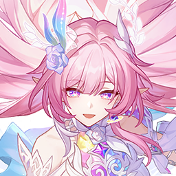
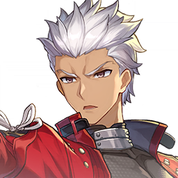
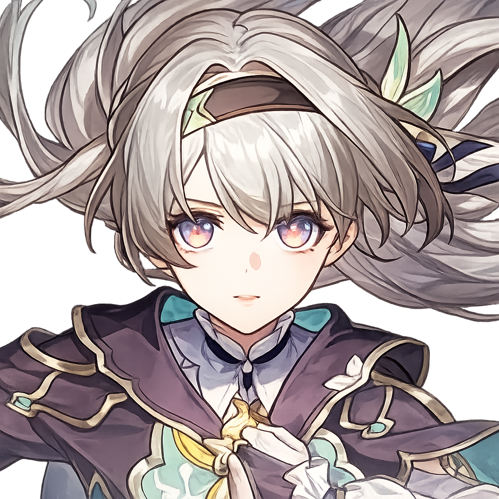
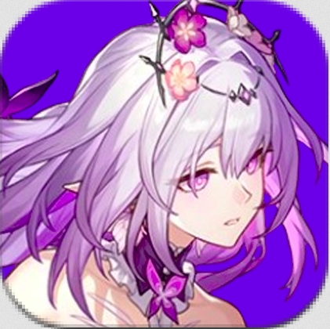
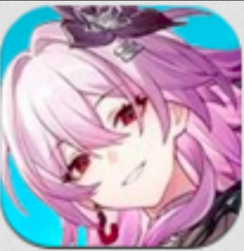
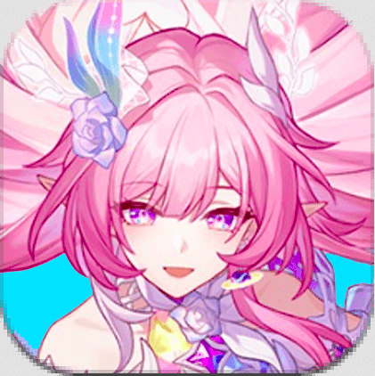

1°

Minha melhor personagem, muito versátil, mas no momento meu melhor personagem de amphoreus é a Castorice, com seu time compreto premium, passa todos os end games com o time dela.
2°

Archer é meu DPS mais poderoso por que eu tenho a carta e o eidolon 2 e o time completo. Ele ja passa o Sombra Apocaliptica e o MOC, ele n é bom no Pura Ficção por que ele é da caça, mas eu acho que se eu deixar o time todo bem buildado eu acho q passo com uma boa pontuação.
3°

É a personagem que eu mais gosto no jogo, pra mim é a mecânica de quebra é a mais divertida de todas as mecânicas do jogo. O único problema é que sem o time premium ou com os eidolons dos personagens do time dela o time não passa nada


